Visia.
Created: 08/28/2013
By: Aether Themes
Email: contact@aetherthemes.com
Thank you for purchasing our theme. If you have any questions that are beyond the scope of this help file, please feel free to visit the dedicated support forum here. Thanks so much!
Table of Contents
A) Installation
Installation is pretty easy. All you need to do is unzip the file, and upload the contents of the template folder to your server via FTP. You can learn more about using a FTP client over here.
The template utilizes AJAX and just a bit of PHP, so if you wish to test it locally on your machine you will need WAMP - for windows and MAMP - for mac. You can learn how
B) Customization - top
You can custom pretty much everything in the theme.
File Structure
HTML
In the root folder you will find the core html file of the landing page. Here is wherer you can edit the actual contet of you site.
CSS
The css files located in the stylesheets directory are the ones responsible for how your theme looks - here you can control the typography, paddings and positions of elements and colors.
CSS Files included:
- reset.css - this file is responsible for resseting browser specific settings (you don't need to edit it)
- ie.css - this file is responsible for IE8 specific styles (you don't need to edit it)
- grid.css - this file is responsible for the responsive gride your site is built on (you don't need to edit it)
- loader.css - this file is responsible for the design of the preloader
- animations.css - this file is responsible for the animations on the site
- style.css - this is the master styles file. Here you can edit every section of the site - notice that the file is actually structured and includes table of contents so you can quickly find the section you want to edit
- colors - in the colors folder you will find the css files that give your template a pre-defined color skin (the default being ruby-red).
Javascript
The css files located in the scripts directory are the ones responsible for javascript effects and functions.
JS Files included:
- jquery.appear.js - this is a plugin that is used for triggering animations (you don't need to edit it)
- jquery.bxslider.js - this is a plugin that is used for the quotes slider and projects slider (you don't need to edit it)
- jquery.countto.js - this is a plugin that is used for automatic counting on subscribe section (you don't need to edit it)
- jquery.easing.js - this is responsible for various jQuery animations (you don't need to edit it)
- jquery.fittext.js - this is responsible for responsive headings (you don't need to edit it)
- jquery.fitvids.js - this is responsible for responsive videos (you don't need to edit it)
- jquery.localscroll.js - this is responsible for smooth scrolling through the navigation (you don't need to edit it)
- jquery.localscroll.js - this is responsible for portfolio filtering (you don't need to edit it)
- jquery.scrollto.js - this is responsible for smooth scrolling through jQuery (you don't need to edit it)
- jquery.waitforimages.js - this is responsible for proper loading of project images (you don't need to edit it)
- parallax.js - this is responsible for the parallax effects (you don't need to edit it)
- royal-preloader.js - this is responsible for preloading the page content (you don't need to edit it)
- smoothscroll.js - this is responsible for smooth scrolling of the page (you don't need to edit it)
- vegas.js - this is responsible for the fullscreen slider (you don't need to edit it)
- waypoints.js - this is responsible for active navigation highlights (you don't need to edit it)
- navigation.js - this is a custom function responsible for the responsive navigation.
- shortcodes.js - this is the main file responsible for shortcode effect lke tabs and accordions.
- main.js - this is the master javascript file. Here is the main initialization function of the website and portfolio, many custom options are configured here.
Editing
The HTML is well structured with comments on every section you need to edit.
Fonts
The fonts used are from the Google Web font library. You can change the font by editing the url provided in the HTML where marked and reflect that change in the css. To learn more and choose the perfect font for you site just head over to Google WebFonts.
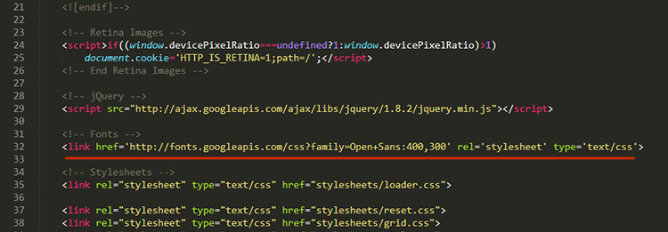Navigation
The navigation automatically transitions between mobile and desktop so to set it up just give your links the name of the section they represent and give them a href attribute with the id of the given section. For instance in the template the 'About Us' section has an id of "section2" - hence the link for this section is "#section2". Another feature of the navigation is the active highlight on scrolling. To achieve it all you need to do is assing matching href attributes to the matching section, and when the given section gets visible the navigation item changes it's color.
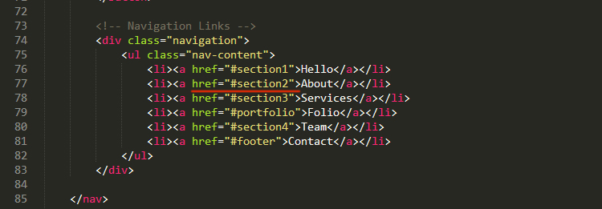 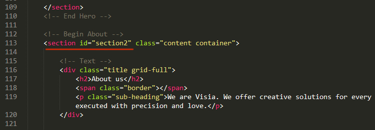Portfolio
Setting up the portfolio is done in two parts. First the thumbnail images and then the projects themselves.
Setting up the thumbnails just requires you to setup your images and give the portfolio item the href attribute to the corresponding project html file with '#!' before the path.
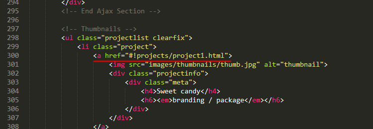*this is done because of AJAX
Projects
This is the second part of the setup. Once you have decided how many projects you want to create, open up the projects folder and create your files there. The project files themselves are fully functional on their own and the main content section (excluding the header and footer) are loaded in the home page by AJAX. What you have to do here is make sure you have the right paths to your files since the project file is not in the root directory like the 'index.html' file.
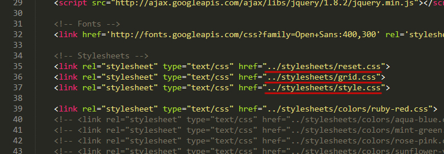To make the portfolio slider images work you need to give them direct paths to your server in order to work. Setting up the project itself is pretty straightforward - just remember that when you call in images you have to do it in the way shown in the template, so that when the user opens the project directly the experience won't be ruined.
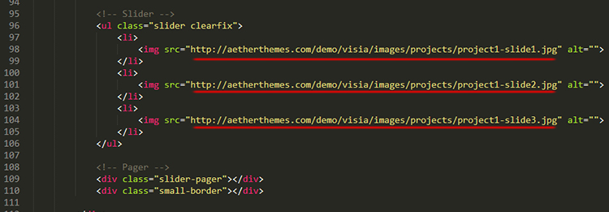Setting up the project itself is pretty straightforward - just remember that when you call in images you have to do it in the way shown in the template, so that when the user opens the project directly the experience won't be ruined.
The projects utilize a slider function, so all the images you put in that list will be part of the slider. If you wish to have only one image for instance just remove the slider markup. The other part of the project is straightforward html markup so just fill in the info and you are done. Video embedding works straight our of the box. Look up project 8 for an example.
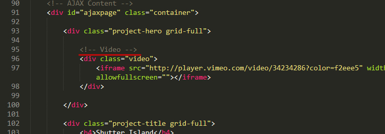Contact Form Setup
Setting up the contact form requires only one line of text to be changed in the post.php file. You need to replace the test email with your own.
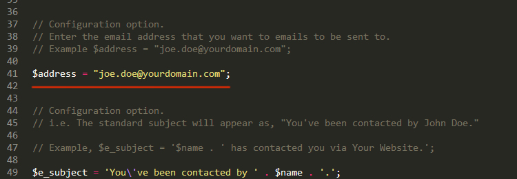Parallax Setup
The template utilizes the background parallax effect. To setup the parallax images just give your section a class 'parallax' and a unique class so you can setup the background image in CSS and call the parallax efect in the main.js file with that class.
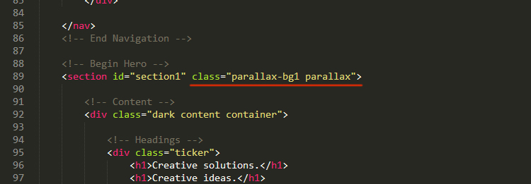 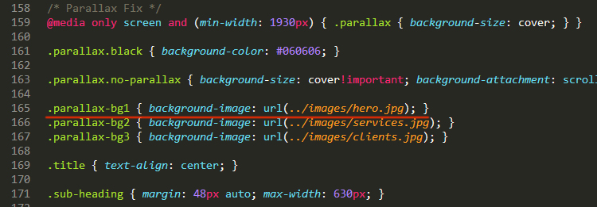 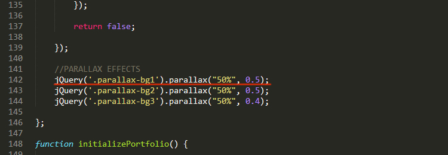Preloader Setup
The preloader is called at the bottom of the 'index.html' file. To make it work just replace the links with the direct links/paths to the images you want to preload before the site shows up.
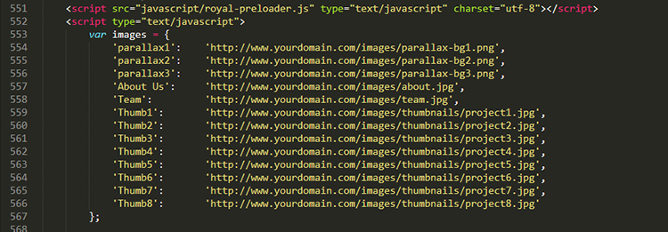Retina Images
The template uses retina images, so if you want to support that functionality you should familiarize yourself with the process. There are two scenarios in which retina images are called - through the HTML markup directly or through CSS.
If you put an image directly in the HTML markup it will load normally on a normal res screen, however on a retina device it will automatically be replaced. To make this work you need to specify the width and the height of the image directly in the markup and provide the same image twice the size withe the @2x selector added at the end of the image name. For instance if you want your 'logo.png' file to be retina compatible just include it in the markup with specified width and height ( the width and height of the original image in pixels ) and create a 'logo@2x.png' file in the same directory that is twice the resolution.
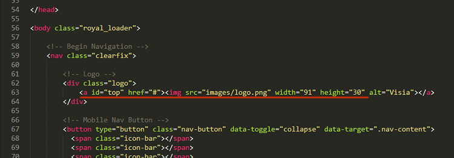If you want to call a retina image through CSS, you will find a css media selector for retina devices at the bottom of the 'style.css' file. This is basically a selector saying to the browser that if the device is retina the following css rule should apply. So for instance you have a div with a background image and you want the backround image to be retina-ready you need to specify the background image in the retina css rules again, but this time use an image twice the size and give it a background-size property that is the same as the background size of the original (non-retina) image.
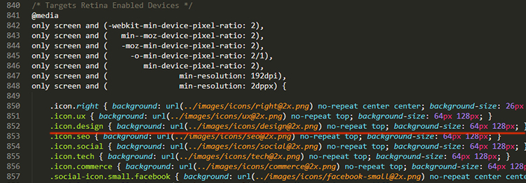Animations
The various animations that you see in the demo content are super-easy to setup. They are supported only in modern browsers and the only thing you need to do is add two classes to the elemnt you wish to animate. (it will animate when it appeares in the browser viewport) The first class to add is 'animated' so the script knows that this elemnt should be animated and the second is the class of the animation itslef. There are four animation supported at the moment (with more to come) - Fade In, Slide Up, Hatch and Entrance. Their classes are : '.fade', '.slide', '.hatch' and '.entrance'.
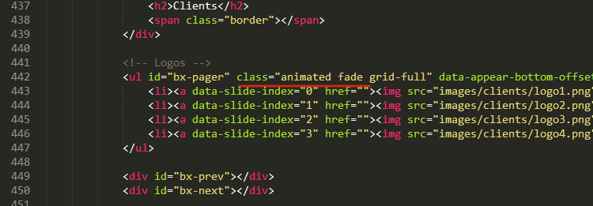Slider
Setting up the slider is super easy. All you have to do is decide on how many images you want to show and put them in the slider folder. Then at the bottom of the 'home-slider.html' file you will see the code responsible for the slider setup. You will have to give the paths to your slider images and choose an overlay image (there are 13 total give them a try). The overlay is optional but is there in case your image is light and you want to improve readability.
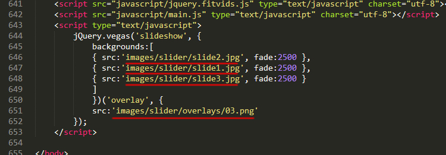Icons
There are a two places that offer a variety of icons. The first place is the services icons. Here all you need to do is change the class of the icon element in order to change it. There are 12 choices and you can see their classes in 'index.html' and 'home-slider.html' utilized. Just scroll down to the services section.
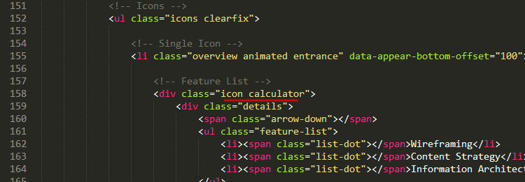The other place is the footer. There is a variety of icons available and all you need to do in order to use them is remove the comment tags <!-- --> before and after the icon code.
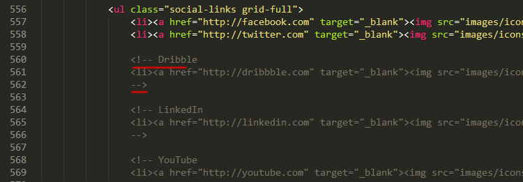Portfolio Filters
Setting up the portfoilo filters relies on two parts - creating the filter options and then attaching a given project to this filter option.
To create the filter option just add a new list item in the filters unordered list, give the new item a class - 'filter' and a 'data-filter' attribute to the filtering category you want it show upon clicking.
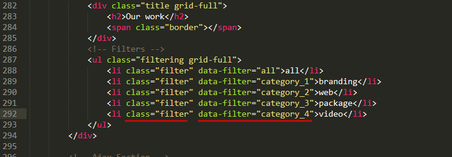After that you need to assign a project to that filter. To do that all you have to do is give your project a class name that is an equivalent to the 'data-filter' attribute you have already created.
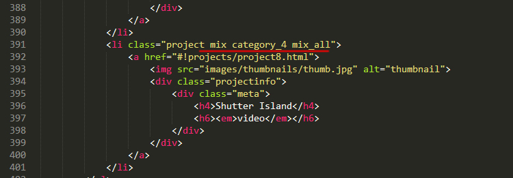adding a class of 'mix_all' will show the project when you click the 'all' filter button
Subscription Form
Setting up the subscription form is pretty easy. All you need to do is open up form.php and follow the instruction in there. Just type in your email in the marked place.
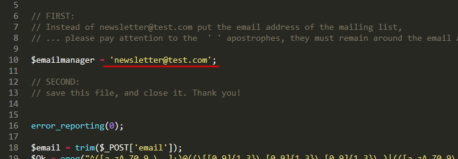Facts Counter
In the extended home version of Visia you will notice a facts counter. To setup the numbers just open up 'home-extended.html' and in the milestones section replace the 'data-from' and 'data-to' attribute values to the number you want to show. The 'data-from' attribute controls from which number to begin counting and the latter is used to determin at which number to stop the counter.
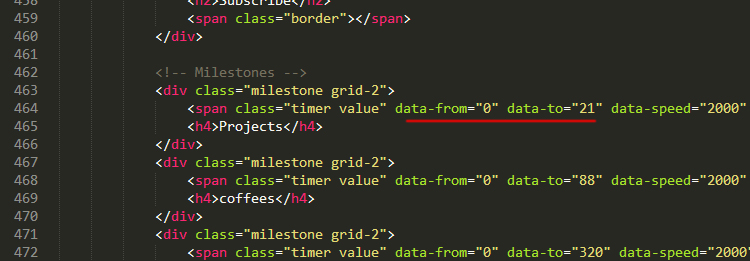Fullscreen Video
The fullscreen video setup is pretty easy. All you need to do is replace the existing video files in the video folder (both the 'mp4' and 'ogv') with your own. The second step is to create a hi-res image of your video that is to be served to mobile devices instead of the video and replace the existing one it in the video too.
Two video files are required due to the fact that Firefox won't play h264 video, so you will need to convert your clip to the ogv format as well. The easiest way would you can find here.
C) Compatability - top
This theme was tested in a vast majority of browsers.
If you found a bug, please use the support forum or report it to us describing:
- Operating System
- Browser version
- What is needed to replicate it
Compatible with:
- Internet Explorer 8+
- Firefox 3.6+
- Safari 4+
- Chrome
- Opera
This theme is fully responsive and compatible with all major devices:
- Large and small display
- Smart phones
- Tablets

D) Sources and Credits - top
- Royal-Preloader
- Parallax
- Appear
- Easing
- bxSlider
- Vegas
- Isabela Rodrigues (image resources)
Once again, thank you so much for purchasing this theme. As noted at the beginning, we'd be glad to help you if you have any questions relating to this theme. No guarantees, but we'll do our best to assist. If you have a more general question relating to the themes on ThemeForest, you might consider visiting the forums and asking your question in the "Item Discussion" section.